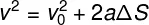

Fisica
Equação Torricelli
A Equação de Torricelli permite o cálculo da velocidade final de um corpo que esteja em Movimento Retilíneo Uniformemente Variado (MRUV), além de também permitir encontrar qualquer outra incógnita de sua própria equação
Como por exemplo o ΔS (deslocamento) ou a V⁰ (velocidade inicial) entre outras incógnitas
A fórmula que leva este nome é formada da seguinte maneira.

v –velocidade final (m/s)
v⁰ –velocidade inicial (m/s)
a –aceleração média (m/s²)
ΔS –deslocamento (m)